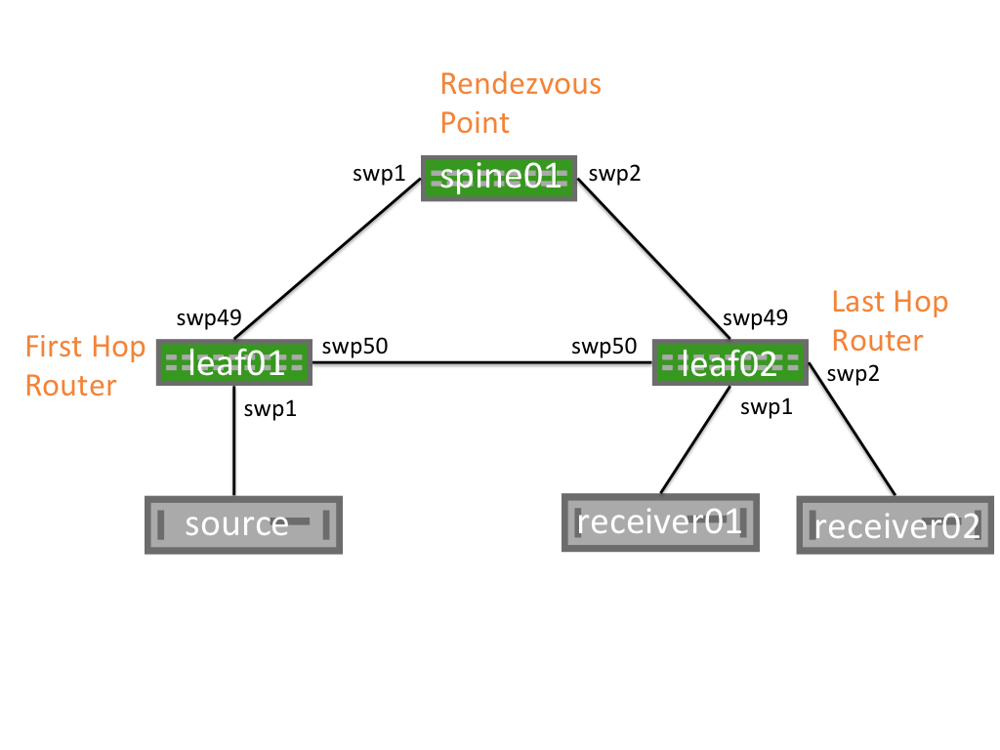
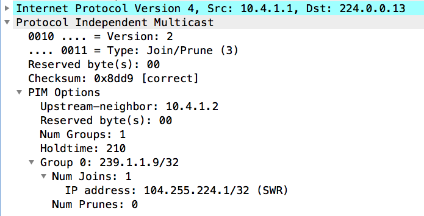
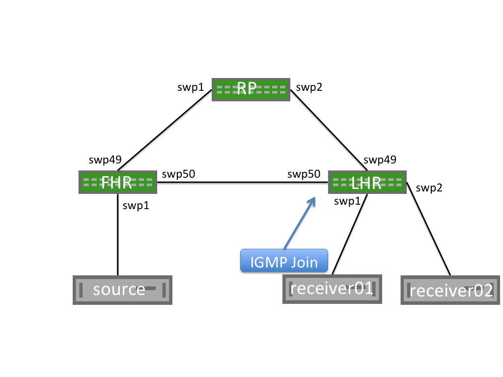
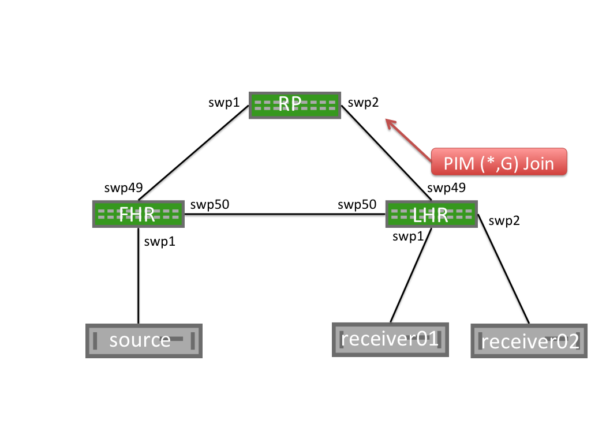
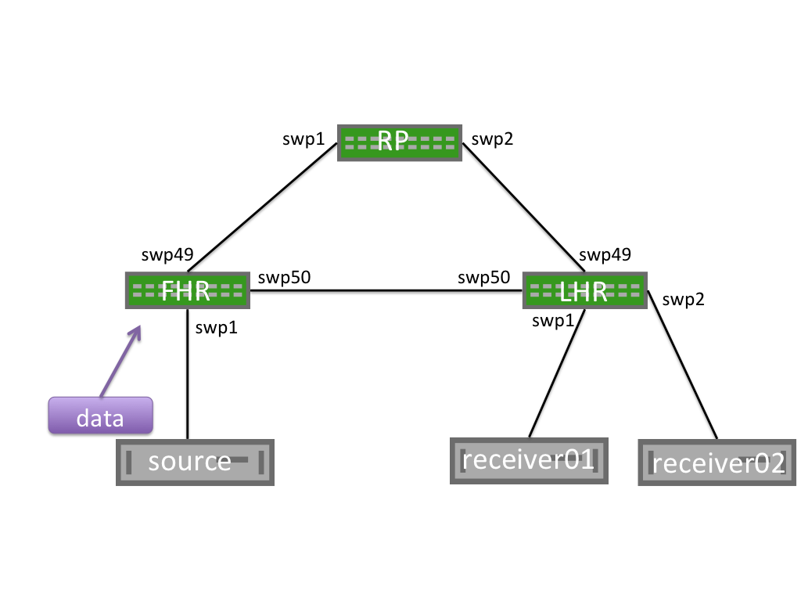
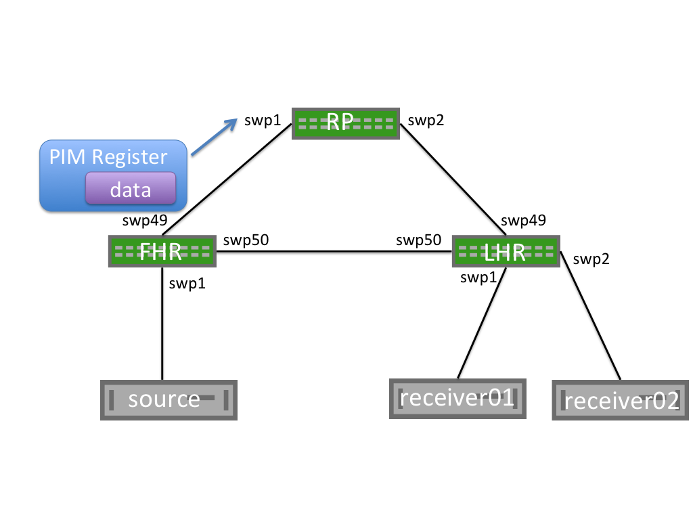

Protocol Independent Multicast - PIM
Protocol Independent Multicast (PIM) is a multicast control plane protocol, that advertises multicast sources and receivers over a routed layer 3 network. Layer 3 multicast relies on PIM to advertise information about multicast capable routers and the location of multicast senders and receivers. For this reason, multicast cannot be sent through a routed network without PIM.
PIM has two modes of operation: Sparse Mode (PIM-SM) and Dense Mode (PIM-DM).
Cumulus Linux only supports PIM Sparse Mode.
Contents
PIM Overview

|
Network Element |
Description |
|
First Hop Router (FHR) |
The FHR is the first router attached closest to the source. The FHR is responsible for the PIM register process. Each multicast source will have a single FHR. |
|
Last Hop Router (LHR) |
The LHR is the last router in the path, attached to an interested multicast receiver. There is a single LHR for each network subnet with an interested receiver, however multicast groups can have multiple LHRs throughout the network. |
|
Rendezvous Point (RP) |
The RP allows for the discovery of multicast sources and multicast receivers. The RP is responsible for sending PIM Register Stop messages to FHRs. |
|
PIM Shared Tree (RP Tree) or (*,G) Tree |
The Shared Tree is the multicast tree rooted at the RP. When receivers wish to join a multicast group, messages are sent along the shared tree towards the RP. |
|
PIM Shortest Path Tree (SPT) or (S,G) Tree |
The SPT is the multicast tree rooted at the multicast source for a given group. Each multicast source will have a unique SPT. The SPT may match the RP Tree, but this is not a requirement. The SPT represents the most efficient way to send multicast traffic from a source to the interested receivers. |
|
Outgoing Interface (OIF) |
The Outgoing interface indicates the interface a PIM or multicast packet should be sent on. OIFs are the interfaces towards the multicast receivers. |
|
Incoming Interface (IIF) |
The Incoming Interface indicates the interface a PIM or multicast packet should be received on. IIFs can be the interfaces towards the multicast, or towards the RP. |
|
Reverse Path Forwarding Interface (RPF Interface) |
Reverse Path Forwarding is the unicast route towards a source or receiver. |
|
Multicast Route (mroute) |
A multicast route indicates the multicast source and multicast group as well as associated OIFs, IIFs, and RPF information. |
|
Star-G mroute (*,G) |
The (*,G) mroute represents the RP Tree. The * is a wildcard indicating any multicast source. The G is the multicast group. An example (*,G) would be (*, 239.1.2.9). |
|
S-G mroute (S,G) |
This is the mroute representing the SPT. The S is the multicast source IP. The G is the multicast group. An example (S,G) would be (10.1.1.1, 239.1.2.9). |
PIM Messages
|
PIM Message |
Description |
|
PIM Hello |
PIM hellos announce the presence of a multicast router on a segment. PIM hellos are sent every 30 seconds by default. PIM Hello Example
22.1.2.2 > 224.0.0.13: PIMv2, length 34 Hello, cksum 0xfdbb (correct) Hold Time Option (1), length 2, Value: 1m45s 0x0000: 0069 LAN Prune Delay Option (2), length 4, Value: T-bit=0, LAN delay 500ms, Override interval 2500ms 0x0000: 01f4 09c4 DR Priority Option (19), length 4, Value: 1 0x0000: 0000 0001 Generation ID Option (20), length 4, Value: 0x2459b190 0x0000: 2459 b190 |
|
PIM Join/Prune (J/P) |
PIM J/P messages indicate the groups that a multicast router would like to receive or no longer receive. Often PIM Join/Prune messages are described as distinct message types, but are actually a single PIM message with a list of groups to join and a second list of groups to leave. PIM J/P messages can be to join or prune from the SPT or RP trees (also called (*,G) Joins or (S,G) Joins). PIM Join/Prune messages are sent to PIM neighbors on individual interfaces. Join/Prune messages are never unicast.  This PIM Join/Prune is for group 239.1.1.9, with 1 Join and 0 Prunes for the group. Join/Prunes for multiple groups can exist in a single packet. S,G Prune Example
21:49:59.470885 IP (tos 0x0, ttl 255, id 138, offset 0, flags [none], proto PIM (103), length 54) 22.1.2.2 > 224.0.0.13: PIMv2, length 34 Join / Prune, cksum 0xb9e5 (correct), upstream-neighbor: 22.1.2.1 1 group(s), holdtime: 3m30s group #1: 225.1.0.0, joined sources: 0, pruned sources: 1 pruned source #1: 33.1.1.1(S) |
|
PIM Register |
PIM register messages are unicast packets sent from a FHR destined to the RP to advertise a new multicast group. The FHR fully encapsulates the original multicast packet in a PIM register messages. The RP is responsible for decapsulating the PIM register message and forwarding it along the (*,G) tree towards the receivers. |
|
PIM Null Register |
PIM Null Register is a special type of PIM Register message where the "Null-Register" flag is set within the packet. Null Register messages are used for a FHR to signal to an RP that a source is still sending multicast traffic. Unlike normal PIM Register messages Null Register messages do not encapsulate the original data packet. |
|
PIM Register Stop |
PIM Register Stop messages are sent by an RP to the FHR to indicate that PIM Register messages should no longer be sent. Register Stop Example
21:37:00.419379 IP (tos 0x0, ttl 255, id 24, offset 0, flags [none], proto PIM (103), length 38) 100.1.2.1 > 33.1.1.10: PIMv2, length 18 Register Stop, cksum 0xd8db (correct) group=225.1.0.0 source=33.1.1.1 |
|
IGMP Membership Report (IGMP Join) |
IGMP Membership Reports are sent by multicast receivers to tell multicast routers of their interest in a specific multicast group. IGMP Join messages trigger PIM *,G Joins. IGMP version 2 messages are sent to the All Hosts multicast address, 224.0.0.1. IGMP version 3 messages are sent to an IGMP v3 specific multicast address, 224.0.0.22. Cumulus Linux only supports IGMP version 3 Membership Reports. |
|
IGMP Leave |
IGMP Leaves tell a multicast router that a multicast receiver no longer wants the multicast group. IGMP Leave messages trigger PIM *,G Prunes. |
PIM Neighbors
When PIM is configured on an interface, PIM Hello messages are sent to the link local multicast group 224.0.0.13. Any other router configured with PIM on the segment that hears the PIM Hello messages will build a PIM neighbor with the sending device.
PIM neighbors are stateless. No confirmation of neighbor relationship is exchanged between PIM endpoints.
PIM Sparse Mode (PIM-SM)
PIM Sparse Mode (PIM-SM) is a "pull" multicast distribution method. This means that multicast traffic is only sent through the network if receivers explicitly ask for it. When a receiver "pulls" multicast traffic, the network must be periodically notified that the receiver wishes to continue the multicast stream.
This behavior is in contrast to PIM Dense Mode (PIM-DM), where traffic is flooded, and the network must be periodically notified that the receiver wishes to stop receiving the multicast stream.
PIM-SM has three configuration options: Any-source Multicast (ASM), Bi-directional Multicast (BiDir), and Source Specific Multicast (SSM):
-
Any-source Mulitcast (ASM) is the traditional, and most commonly deployed PIM implementation. ASM relies on Rendevous Points to connect multicast senders and receivers that then dynamically determine the shortest path through the network between source and receiver, to efficiently send multicast traffic.
-
Bidirectional PIM (BiDir) forwards all traffic through the multicast Rendezvous Point (RP), rather than tracking multicast source IPs, allowing for greater scale, while resulting in inefficient forwarding of network traffic.
-
Source Specific Multicast (SSM) requires multicast receivers to know exactly which source they wish to receive multicast traffic from, rather than relying on multicast Rendezvous Points. SSM requires the use of IGMPv3 on the multicast clients.
Cumulus Linux only supports Any-source Multicast. PIM SSM and PIM BiDir are not currently supported.
Any-source Multicast Routing
Multicast routing behaves differently depending on whether the source is sending before receivers request the multicast stream, or if a receiver tries to join a stream before there are any sources.
Receiver Joins First
When a receiver joins a group, an IGMP Membership Join message is sent to the IGMPv3 multicast group, 224.0.0.22. The PIM multicast router for the segment, listening to the IGMPv3 group, receives the IGMP Membership Join message, and becomes an LHR for this group.

This creates a (*,G) mroute, with an OIF of the interface on which the IGMP Membership Report was received and an IIF of the RPF interface for the RP.
The LHR generates a PIM (*,G) Join message, and sends it from the interface towards the RP. Each multicast router between the LHR and the RP will build a (*,G) mroute with the OIF being the interface on which the PIM Join message was received and an Incoming Interface of the Reverse Path Forwarding interface for the RP.

When the RP receives the (*,G) Join message, it will not send any additional PIM Join messages. The RP will maintain a (*,G) state as long as the receiver wishes to receive the multicast group.
Unlike multicast receivers, multicast sources do not send IGMP (or PIM) messages to the FHR. A multicast source begins sending and the FHR will receive the traffic and build both a (*,G) and an (S,G) mroute. The FHR will then begin the PIM Register process.
PIM Register Process
When a First Hop Router (FHR) receives a multicast data packet from a source, the FHR does not know if there are any interested multicast receivers in the network. The FHR encapsulates the data packet in a unicast PIM register message. This packet is sourced from the FHR and destined to the RP address. The RP will build an (S,G) mroute and decapsulate the multicast packet and forward it along the (*,G) tree.
As the unencapsulated multicast packet travels down the (*,G) tree towards the interested receivers. At the same time, the RP will send a PIM (S,G) Join towards the FHR. This will build an (S,G) state on each multicast router between the RP and FHR.
When the FHR receives a PIM (S,G) Join, it will continue encapsulating and sending PIM Register messages, but will also make a copy of the packet and send it along the (S,G) mroute.
The RP then receives the multicast packet along the (S,G) tree and sends a PIM Register Stop to the FHR to end the register process.
 
PIM SPT Switchover
When the LHR receives the first multicast packet, in order to efficiently forward traffic through the network, it will send a PIM (S,G) Join towards the FHR. This builds the Shortest Path Tree (SPT), or the tree that is the shortest path to the source.
When the traffic arrives over the SPT, a PIM (S,G) Prune will be sent up the Shared Tree towards the RP. This removes multicast traffic from the shared tree; multicast data will only be sent over the SPT.
The LHR will now send both (*,G) Joins and (S,G) Prune messages towards the RP.
Cumulus Linux PIM does not currently support SPT Switchover. All traffic will be forwarded along the shared tree.
Sender Starts Before Receivers Join
As previously mentioned, a multicast sender can send multicast data without any additional IGMP or PIM signaling. When the FHR receives the multicast traffic it will encapsulate it and send a PIM Register to the Rendezvous Point (RP).
When the RP receives the PIM Register, it will build an (S,G) mroute; however, there is no (*,G) mrouter and no interested receivers.
The RP will drop the PIM Register message and immediately send a PIM Register Stop message to the FHR.
Receiving a PIM Register Stop without any associated PIM Joins leaves the FHR without any outgoing interfaces. The FHR will drop this multicast traffic until a PIM Join is received.
PIM Register messages are sourced from the interface that received the multicast traffic and are destined to the RP address. The PIM Register is not sourced from the interface towards the RP.
PIM Null-Register
In order to notify the RP that multicast traffic is still flowing when the RP has no receiver, or if the RP is not on the SPT tree, the FHR will periodically send PIM Null Register messages. The FHR sends a PIM Register with the Null-Register flag set, but without any data. This special PIM Register notifies the RP that a multicast source is still sending, should any new receivers come online.
After receiving a PIM Null-Register, the RP immediately sends a PIM Register Stop to acknowledge the reception of the PIM Null Register message.
Configuration
Getting Started
The cumulus-pim package is included in Quagga. To configure PIM on a switch:
-
Open /etc/quagga/daemons in a text editor.
-
Add the following line to the end of the file to enable pimd, and save the file:
zebra=yespimd=yes -
Run the systemctl restart command to restart Quagga:
cumulus@switch:~$ sudo systemctl restart quagga -
In a terminal, run the vtysh command to start the Quagga CLI on the switch.
cumulus@switch:~$ sudo vtyshcumulus# -
Run the following commands to enable multicast routing:
cumulus# configure terminalcumulus(config)# ip multicast-routing -
Run the following commands to configure the PIM interfaces:
cumulus# configure terminalcumulus(config)#intswp1cumulus(config-if)# ip pim smPIM must be enabled on all interfaces facing multicast sources or multicast receivers, as well as on the interface where the RP address is configured.
-
Run the following commands to enable either IGMPv2 or IGMPv3 on the interfaces with hosts attached:
cumulus# configure terminalcumulus(config)#intswp1cumulus(config-if)# ip igmp version3IGMP must be configured on all interfaces where multicast receivers exist.
-
Configure a group mapping for a static RP:
cumulus# configure terminalcumulus(config)# ip pim rp192.168.0.1224.0.0.0/4Each PIM-SM enabled device must configure a static RP to a group mapping, and all PIM-SM enabled devices must have the same RP to group mapping configuration.
The following is example configuration
RP# show runBuilding configuration...Current configuration:!log syslogip multicast-routingip pim rp 192.168.0.1 224.0.0.0/4username cumulus nopassword!!interface lo description RP Address interface ip ospf area 0.0.0.0 ip pim sm!interface swp1 description interface to FHR ip ospf area 0.0.0.0 ip ospf network point-to-point ip pim sm!interface swp2 description interface to LHR ip ospf area 0.0.0.0 ip ospf network point-to-point ip pim sm!router ospf ospf router-id 192.168.0.1!line vty!endFHR# show run!log syslogip multicast-routingip pim rp 192.168.0.1 224.0.0.0/4username cumulus nopassword!interface bridge10.1 description Interface to multicast source ip ospf area 0.0.0.0 ip ospf network point-to-point ip pim sm!interface lo ip ospf area 0.0.0.0 ip pim sm!interface swp49 description interface to RP ip ospf area 0.0.0.0 ip ospf network point-to-point ip pim sm!interface swp50 description interface to LHR ip ospf area 0.0.0.0 ip ospf network point-to-point ip pim sm!router ospf ospf router-id 192.168.1.1!line vty!endLHR# show run!log syslogip multicast-routingip pim rp 192.168.0.1 224.0.0.0/4username cumulus nopassword!interface bridge10.1 description interface to multicast receivers ip igmp ip ospf area 0.0.0.0 ip ospf network point-to-point ip pim sm!interface lo ip ospf area 0.0.0.0 ip pim sm!interface swp49 description interface to RP ip ospf area 0.0.0.0 ip ospf network point-to-point ip pim sm!interface swp50 description interface to FHR ip ospf area 0.0.0.0 ip ospf network point-to-point ip pim sm!router ospf ospf router-id 192.168.2.2!line vty!endMulticast Source Discovery Protocol (MSDP)
The Multicast Source Discovery Protocol (MSDP) is used to connect multiple PIM-SM multicast domains together, using the PIM-SM RPs. By configuring any cast RPs with the same IP address on multiple multicast switches (primarily on the loopback interface), the PIM-SM limitation of only one RP per multicast group is relaxed. This allows for an increase in both failover and load-balancing throughout.
When an RP discovers a new source (typically a PIM-SM register message via TCP), a source-active (SA) message is sent to each MSDP peer. The peer then determines if any receivers are interested.
Cumulus Linux MSDP support is primarily for anycast-RP configuration, rather than multiple multicast domains. Each MSDP peer must be configured in a full mesh, as SA messages are not received and re-forwarded.
Cumulus Linux currently only supports one MSDP mesh-group.
Configuration
The steps below cover configuring a Cumulus switch to use the MSDP
-
Add an anycast IP address to the loopback interface for each RP in the domain:
cumulus@switch:$ net add loopback lo ip address10.1.1.1/32cumulus@switch:$ net add loopback lo ip address10.1.1.100/32cumulus@switch:$ net pendingcumulus@switch:$ net commit -
On every multicast switch, configure the group to RP mapping using the anycast address:
cumulus@switch:$ net add pim rp100.1.1.100224.0.0.0/4cumulus@switch:$ net pendingcumulus@switch:$ net commit -
Log into the Quagga CLI:
cumulus@switch:$ sudo vtysh -
Configure the MSDP mesh group for all active RPs:
The mesh group should include all RPs in the domain as members, with a unique address as the source. This configuration will result in MSDP peerings between all RPs.
switch# conf tswitch(config)# ip msdp mesh-group cumulus source100.1.1.1switch(config)# ip msdp mesh-group cumulus source100.1.1.2switch(config)# ip msdp mesh-group cumulus source100.1.1.3 -
Inject the anycast IP address into the domain's IGP.
If the network is unnumbered and uses unnumbered BGP as the IGP, avoid using the anycast IP address for establishing unicast or multicast peerings. For PIM-SM, ensure that the unique address is used as the PIM hello source by setting the source:
cumulus@switch:$ sudo vtyshswitch# conf tswitch(config)# interface loswitch(config-if)# ip pim use-source 100.1.1.1Verifying PIM
The following outputs are based on the Cumulus Reference Topology with cldemo-pim.
Source Starts First
On the FHR, an mroute is built, but the upstream state is "Prune". The FHR flag is set on the interface receiving multicast.
Use the show ip mroute command to review detailed output for the FHR:
exit01# show ip mrouteSource Group Proto Input Output TTL Uptime172.16.5.105 239.1.1.1 none br0 none 0 --:--:--!exit01# show ip pim upstreamIif Source Group State Uptime JoinTimer RSTimer KATimer RefCntbr0 172.16.5.105 239.1.1.1 Prune 00:07:40 --:--:-- 00:00:36 00:02:50 1!exit01# show ip pim upstream-join-desiredInterface Source Group LostAssert Joins PimInclude JoinDesired EvalJD!exit01# show ip pim interfaceInterface State Address PIM Nbrs PIM DR FHRbr0 up 172.16.5.1 0 local 1swp51 up 10.1.0.17 1 local 0swp52 up 10.1.0.19 0 local 0!exit01# show ip pim stateSource Group IIF OIL172.16.5.105 239.1.1.1 br0!exit01# show ip pim int detailInterface : br0State : upAddress : 172.16.5.1Designated Router-----------------Address : 172.16.5.1Priority : 1Uptime : --:--:--Elections : 2Changes : 0FHR - First Hop Router----------------------239.1.1.1 : 172.16.5.105 is a source, uptime is 00:27:43On the Spine, no mroute state is created, but the show ip pim upstream output includes the S,G:
spine01# show ip mrouteSource Group Proto Input Output TTL Uptime!spine01# show ip pim upstreamIif Source Group State Uptime JoinTimer RSTimer KATimer RefCntswp30 172.16.5.105 239.1.1.1 Prune 00:00:19 --:--:-- --:--:-- 00:02:46 1As a receiver joins the group, the mroute Output interface on the FHR transitions from "none" to the RPF interface of the RP:
exit01# show ip mrouteSource Group Proto Input Output TTL Uptime172.16.5.105 239.1.1.1 PIM br0 swp51 1 00:05:40!exit01# show ip pim upstreamIif Source Group State Uptime JoinTimer RSTimer KATimer RefCntbr0 172.16.5.105 239.1.1.1 Prune 00:48:23 --:--:-- 00:00:00 00:00:37 2!exit01# show ip pim upstream-join-desiredInterface Source Group LostAssert Joins PimInclude JoinDesired EvalJDswp51 172.16.5.105 239.1.1.1 no yes no yes yes!exit01# show ip pim stateSource Group IIF OIL172.16.5.105 239.1.1.1 br0 swp51spine01# show ip mrouteSource Group Proto Input Output TTL Uptime* 239.1.1.1 PIM lo swp1 1 00:09:59172.16.5.105 239.1.1.1 PIM swp30 swp1 1 00:09:59!spine01# show ip pim upstreamIif Source Group State Uptime JoinTimer RSTimer KATimer RefCntlo * 239.1.1.1 Joined 00:10:01 00:00:59 --:--:-- --:--:-- 1swp30 172.16.5.105 239.1.1.1 Joined 00:00:01 00:00:59 --:--:-- 00:02:35 1!spine01# show ip pim upstream-join-desiredInterface Source Group LostAssert Joins PimInclude JoinDesired EvalJDswp1 * 239.1.1.1 no yes no yes yes!spine01# show ip pim stateSource Group IIF OIL* 239.1.1.1 lo swp1172.16.5.105 239.1.1.1 swp30 swp1Receiver Joins First
On the LHR attached to the receiver:
leaf01# show ip mrouteSource Group Proto Input Output TTL Uptime* 239.2.2.2 IGMP swp51 br0 1 00:01:19!leaf01# show ip pim local-membershipInterface Address Source Group Membershipbr0 172.16.1.1 * 239.2.2.2 INCLUDE!leaf01# show ip pim stateSource Group IIF OIL* 239.2.2.2 swp51 br0!leaf01# show ip pim upstreamIif Source Group State Uptime JoinTimer RSTimer KATimer RefCntswp51 * 239.2.2.2 Joined 00:02:07 00:00:53 --:--:-- --:--:-- 1!leaf01# show ip pim upstream-join-desiredInterface Source Group LostAssert Joins PimInclude JoinDesired EvalJDbr0 * 239.2.2.2 no no yes yes yes!leaf01# show ip igmp groupsInterface Address Group Mode Timer Srcs V Uptimebr0 172.16.1.1 239.2.2.2 EXCL 00:04:02 1 3 00:04:12!leaf01# show ip igmp sourcesInterface Address Group Source Timer Fwd Uptimebr0 172.16.1.1 239.2.2.2 * 03:54 Y 00:04:21On the RP:
spine01# show ip mrouteSource Group Proto Input Output TTL Uptime* 239.2.2.2 PIM lo swp1 1 00:00:03!spine01# show ip pim stateSource Group IIF OIL* 239.2.2.2 lo swp1!spine01# show ip pim upstreamIif Source Group State Uptime JoinTimer RSTimer KATimer RefCntlo * 239.2.2.2 Joined 00:05:17 00:00:43 --:--:-- --:--:-- 1!spine01# show ip pim upstream-join-desiredInterface Source Group LostAssert Joins PimInclude JoinDesired EvalJDswp1 * 239.2.2.2 no yes no yes yesTroubleshooting PIM
FHR Stuck in Registering Process
When a multicast source starts, the FHR sends unicast PIM register messages from the RPF interface towards the source. After the PIM register is received by the RP, a PIM register stop message is sent from the RP to the FHR to end the register process. If an issue with this communication, the FHR will remain stuck in the registering process, which can result in high CPU, as PIM register packets are generated by the FHR CPU, and sent to the RP CPU.
To assess this issue:
-
Review the FHR. The output interface of pimreg can be seen here. If this does not change to an interface within a few seconds, the FHR is likely stuck.
exit01# show ip mrouteSource Group Proto Input Output TTL Uptime172.16.5.105239.2.2.3PIM br0 pimreg100:03:59
To troubleshoot the issue:
-
Validate that the FHR can reach the RP. If the RP and FHR can not communicate, the Registration process will fail:
cumulus@exit01:~$ ping10.0.0.21-I br0PING10.0.0.21(10.0.0.21) from172.16.5.1br0:56(84) bytes of data.^C---10.0.0.21ping statistics ---4packets transmitted,0received,100% packet loss, time 3000ms -
On the RP, use tcpdump to see if the PIM Register packets are arriving:
cumulus@spine01:~$ sudo tcpdump -i swp30tcpdump: verbose output suppressed, use -v or -vvforfull protocol decodelistening on swp30, link-type EN10MB (Ethernet), capture size262144bytes23:33:17.524982IP172.16.5.1>10.0.0.21: PIMv2, Register, length66 -
If PIM Registration packets are being received, verify that they are seen by PIM by issuing debug pim packets from within Quagga:
cumulus@spine01:~$ sudo vtysh -c"debug pim packets"PIM Packet debugging is oncumulus@spine01:~$ sudo tail /var/log/quagga/quagga.log2016/10/1923:46:51PIM: Recv PIM REGISTER packet from172.16.5.1to10.0.0.21on swp30: ttl=255pim_version=2pim_msg_size=64checksum=a681 -
Repeat the process on the FHR to see if PIM Register Stop messages are being received on the FHR and passed to the PIM process:
cumulus@exit01:~$ sudo tcpdump -i swp5123:58:59.841625IP172.16.5.1>10.0.0.21: PIMv2, Register, length2823:58:59.842466IP10.0.0.21>172.16.5.1: PIMv2, Register Stop, length18cumulus@exit01:~$ sudo vtysh -c"debug pim packets"PIM Packet debugging is oncumulus@exit01:~$ sudo tail -f /var/log/quagga/quagga.log2016/10/1923:59:38PIM: Recv PIM REGSTOP packet from10.0.0.21to172.16.5.1on swp51: ttl=255pim_version=2pim_msg_size=18checksum=5a39
No *,G Is Built on LHR
The most common reason for a *,G to not be built on a LHR is for both PIM and IGMP to not be enabled on an interface facing a receiver.
leaf01# show run!interface br0 ip igmp ip ospf area 0.0.0.0 ip pim smTo troubleshoot this issue:
-
If both PIM and IGMP are enabled, ensure that IGMPv3 Joins are being sent by the receiver:
cumulus@leaf01:~$ sudo tcpdump -i br0 igmptcpdump: verbose output suppressed, use -v or -vvforfull protocol decodelistening on br0, link-type EN10MB (Ethernet), capture size262144bytes00:03:55.789744IP172.16.1.101> igmp.mcast.net: igmp v3 report,1group record(s)
No mroute Created on FHR
To troubleshoot this issue:
-
Verify that multicast traffic is being received:
cumulus@exit01:~$ sudo tcpdump -i br0tcpdump: verbose output suppressed, use -v or -vvforfull protocol decodelistening on br0, link-type EN10MB (Ethernet), capture size262144bytes00:11:52.944745IP172.16.5.105.51570>239.2.2.9.1000: UDP, length9 -
Verify that PIM is configured on the interface facing the source:
exit01# show run!interfacebr0ip ospf area0.0.0.0ip pim sm-
If PIM is configured, verify that the RPF interface for the source matches the interface the multicast traffic is received on:
exit01# show ip rpf172.16.5.105Routing entryfor172.16.5.0/24using Multicast RIBKnown via"connected", distance0, metric0, best* directly connected, br0
-
-
Verify that an RP is configured for the multicast group:
exit01# show ip pim rp-infoRP address group/prefix-list OIF I am RP10.0.0.21224.0.0.0/4swp51 no
No S,G on RP for an Active Group
An RP will not build an mroute when there are no active receivers for a multicast group, even though the mroute was created on the FHR:
spine01# show ip mrouteSource Group Proto Input Output TTL Uptimespine01#exit01# show ip mrouteSource Group Proto Input Output TTL Uptime172.16.5.105 239.2.2.9 none br0 none 0 --:--:--This is expected behavior. The active source can be seen on the RP with show ip pim upstream:
spine01# show ip pim upstreamIif Source Group State Uptime JoinTimer RSTimer KATimer RefCntswp30 172.16.5.105 239.2.2.9 Prune 00:08:03 --:--:-- --:--:-- 00:02:20 1!spine01# show ip mrouteSource Group Proto Input Output TTL Uptimespine01#No mroute Entry Present in Hardware
Please verify that the hardware IP multicast entry is the maximum value already, using the cl-resource-query command:
cumulus@switch:~$ cl-resource-query | grep Mcast Total Mcast Routes: 450, 0% of maximum value 450For Mellanox chipsets, please refer to TCAM Resource Profiles for Mellanox Switches.
Verify MSDP Session State
Run the following commands to verify the state of MSDP sessions:
switch# show ip msdp mesh-group
Mesh group : pod1
Source : 100.1.1.1
Member State
100.1.1.2 established
100.1.1.3 established
spine-1# show ip msdp peer
Peer Local State Uptime SaCnt
100.1.1.2 100.1.1.1 established 00:07:21 0
100.1.1.3 100.1.1.1 established 00:07:21 0
spine-1# View the Active Sources
Review the active sources learned locally (via PIM registers) and from MSDP peers:
switch# show ip msdp sa Source Group RP Local SPT Uptime44.1.11.2 239.1.1.1 100.1.1.1 n n 00:00:4044.1.11.2 239.1.1.2 100.1.1.1 n n 00:00:25spine-2# Caveats and Errata
-
Cumulus Linux 3.2.0 only supports PIM Sparse Mode - Any-source Multicast (PIM-SM ASM). Dense Mode, Bidirectional Multicast, and Source-specific Multicast are not supported.
-
ECMP with multicast traffic is not implemented; all multicast traffic will utilize a single link.
-
ECMP RPF is not supported; only a single path towards the source is supported. Traffic may be dropped for RPF failure if ECMP paths towards the source exist.
-
SPT switchover is not supported. All traffic will flow over the shared tree.
-
S,G mroutes are not build on routers that are not the Rendezvous Point (RP) or the First-hop Router (FHR). S,G PIM Joins will be sent, but only *,G mroutes are built. As a result, all traffic will flow over the *,G tree, similar to PIM Bidirectional Multicast.
-
Non-native forwarding (register decapsulation) is not supported. Initial packet loss is expected while the PIM *,G tree is built from the Rendezvous Point (RP) to the First-hop Router (FHR) to trigger native forwarding.
-
Cumulus Linux does not currently build an S,G mroute when forwarding over an *,G tree.